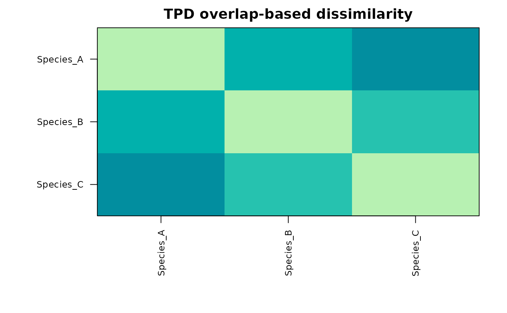

Intraspecific-variability-aware functional dissimilarity between species
Source:R/tpd_dissimilarity.R
tpd_dissimilarity.RdComputes the overlap-based functional dissimilarity between every pair of
species (or populations) from individual-level trait data, using the
Trait Probability Density (TPD) framework of Carmona et al. (2016, 2019).
Each species is represented not by a single mean trait value but by a
probability density estimated from its individuals, and the dissimilarity
between two species is 1 - overlap of their densities. Because the
densities are built from individuals, intraspecific variability shapes the
distances directly: two species whose individuals spread into a shared
region of trait space are treated as functionally closer than their means
alone would suggest – unlike a Euclidean distance between species means,
which ignores within-species spread entirely.
Arguments
- x
An object of class
"intrait_tpd_dissim".- groups
Factor or character vector, one value per row of
x(species or population). Required for a raw trait table; taken fromx$groupsfor an"intrait_traitspace". Rows with a missing group are dropped. At least two groups with at least two individuals each are required.- n_axes
Integer, number of PCA axes defining the trait space in which the densities are estimated. Defaults to
2; values above3make the TPD grid very costly and trigger a warning.- log_transform, scale
Preprocessing of a raw trait table, as in
trait_space():log_transformapplieslog10(x + 1);scalestandardises each trait before the PCA. Ignored for an"intrait_traitspace". DefaultFALSEandTRUE.- seed
Optional integer for
set.seed()(TPD kernel estimation is deterministic, but this fixes any incidental randomness). Defaults toNULL.- m
An object of class
"intrait_tpd_dissim".- ...
Currently unused.
Value
An object of class "intrait_tpd_dissim", a list with:
- dissimilarity
a symmetric species-by-species matrix of overlap-based functional dissimilarity (
1 - overlap, in[0, 1]).- shared, non_shared
the shared and non-shared components of the dissimilarity (each a species-by-species matrix), when
TPD::dissim()returns them; otherwiseNULL.- species, n_axes, var_explained
the group levels, the number of PCA axes used, and the proportion of trait variance they capture.
Has print(), plot() (a dissimilarity heat map) and as.dist()
methods.
as.dist() returns a "dist" object of the dissimilarity matrix.
print() invisibly returns x.
Details
Individuals are projected into a fixed, reduced trait space (a PCA on the
standardised traits, keeping n_axes axes) before the densities are
estimated, because TPD kernels are only tractable in a few dimensions;
n_axes = 2 is the recommended default. The densities and their pairwise
overlaps are obtained with TPD::TPDs() and TPD::dissim(); the returned
matrix is TPD::dissim()'s population-level dissimilarity, and its
decomposition into the shared and non-shared (turnover-like) components is
returned alongside when available.
The resulting dissimilarity is a drop-in, ITV-aware replacement for a
species-mean distance matrix: it can be ordinated (cmdscale(as.dist(d))),
clustered, or fed to a distance-based diversity index (e.g. Rao's quadratic
entropy via TPD::Rao(), or a functional Hill number).
References
Carmona, C. P., de Bello, F., Mason, N. W. H., & Leps, J. (2016). Traits without borders: integrating functional diversity across scales. Trends in Ecology & Evolution, 31(5), 382-394.
Carmona, C. P., de Bello, F., Mason, N. W. H., & Leps, J. (2019). Trait probability density (TPD): measuring functional diversity across scales based on TPD with R. Ecology, 100(12), e02876.
Examples
fish <- simulate_fishmorph_points(n_per_species = 20, n_replicates = 1)
ratios <- fishmorph_ratios(fishmorph_segments(fish))
# \donttest{
if (requireNamespace("TPD", quietly = TRUE)) {
d <- tpd_dissimilarity(
ratios[, c("BEl", "VEp", "REs")], groups = fish$metadata$species
)
d
plot(d)
# use as an ITV-aware distance, e.g. an ordination of species:
pcoa <- stats::cmdscale(as.dist(d))
}

# }